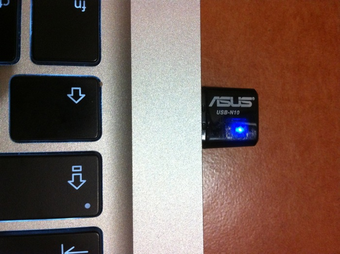
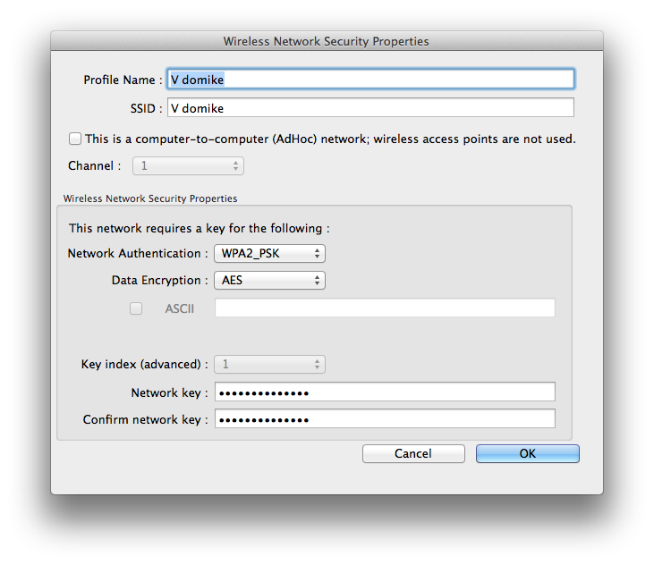
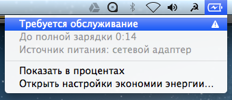
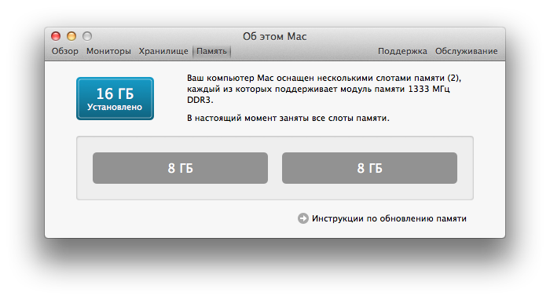
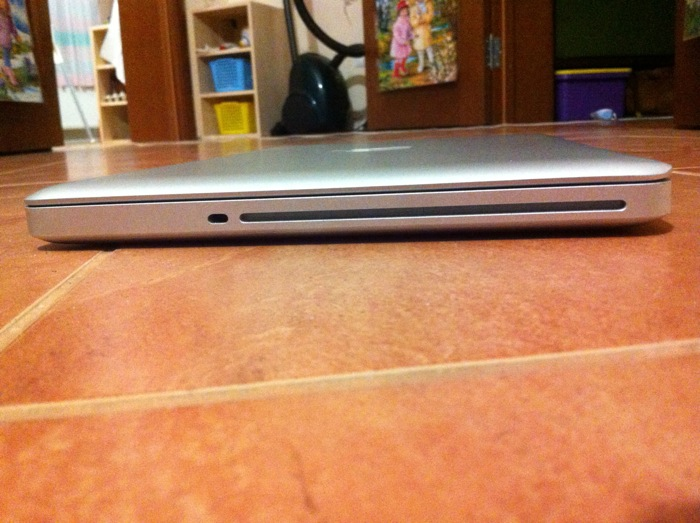

Продам Макбук Про
- Начало 2011 года;
- 13 дюймов;
- Intel Core i5 2,3 ГГц;
- 16 ГБ 1333 МГц DDR3;
- 128 ГБ SSD + 320 ГБ HD.
30 000 рублей
Посмотреть и купить ноутбук можно в Великом Новгороде или Санкт-Петербурге.
Чтобы договориться о встрече, напишите мне: artpolikarpov@gmail.com.
⌘
Это мой первый Макбук. Я купил его в мае 2011 года.
Дома я предпочитаю работать за большим Аймаком, а ноутбук выручал меня в поездках по России, Германии, Швеции, Швейцарии, Казахстану...
Очень кайфово работается в уличных кафешках Сербии, например:
На этой тринашке я сверстал половину бюрошных проектов и сделал Фотораму, которая, кстати, крутит фотки на этой странице.
Ещё выступил в Самаре с докладом «Технолог — тоже дизайнер» и написал 47 советов разработке веб-интерфейсов.
В общем, компьютер намоленный, с хорошей кармой.
/!\ Вай-фай
Недавно перестал работать вай-фай, пишет: «нет аппаратного обеспечения». В авторизованном сервисе сказали, что дело не в антенне и нужно менять материнскую плату целиком, а это не дёшево.
Меня спас адаптер беспроводной сети ASUS USB-N10, купленный за 500 рублей:

В итоге вай-фай на компьютере работает, «флешка» действительно миниатюрная — ни за что не цепляется, но радиус действия теперь меньше, и интерфейс вот такой:

/!\ Батарея
К аккумулятору не было никаких претензий, 3-4 часа я спокойно обходился без розетки (с запущенными редактором кода, Фотошопом, миллионом браузеров и ещё кучей программ). Но сейчас, когда полез делать ревизию компьютера, заметил надпись «требуется обслуживание» под батареечкой в строке меню:

При этом всё работает нормально. Количество циклов перезарядки — 380.
Апгрейд
Не так давно мне стало не хватать производительности стандартной комплектации (4 ГБ оперативной памяти, жёсткий диск со скоростью 5 400 оборотов в минуту). Я решительно проапгрейдил ноутбук — установил максимальное колличество оперативной памяти и быстрый SSD для системного раздела.
Теперь компьютер летает:

Супердрайв
Флеш-накопитель Intel SSDSC2CW120A3 со скоростью шины 6 гигабит я установил на место штатного винчестера. Штатный винчестер переехал в слот ДВД-привода. Диски ноутбук больше не крутит, как и все новые Макбуки. Внешне ничего не изменилось, щель выглядит так же:

Сам ДВД-привод никуда не пропал, он переехал в специальную коробочку с USB-проводом и стал внешним. Я отдам его вместе в ноутбуком.
Макбук Про за 30 000 рублей
- Модель начала 2011 года;
- 13 дюймов;
- Intel Core i5 2,3 ГГц;
- 16 ГБ 1333 МГц DDR3;
- 128 ГБ SSD + 320 ГБ HD.
Вместе с компьютером вам достанутся:
- заводская коробка с яблочком;
- родная зарядка MagSafe;
- адаптер ASUS USB-N10 в замен сломавшегося вай-фая;
- внешний ДВД-привод SuperDrive.
Посмотреть и купить ноутбук можно в Великом Новгороде или Санкт-Петербурге. Чтобы договориться о встрече, напишите мне: artpolikarpov@gmail.com.
Артём Поликарпов,
29 апреля 2013 года
{kind=link}
{kind=link}
{kind=link}
{kind=link}
{kind=link}
{kind=link}
{kind=link}
{kind=link}
{kind=link}
{kind=link}
{kind=link}
{kind=link}
{kind=link}